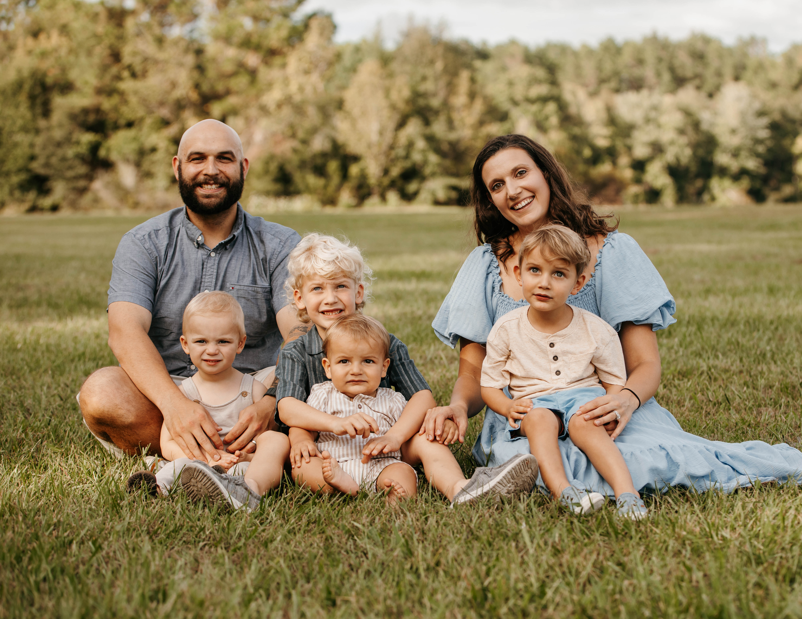

A family called to live on mission in the Greater Salt Lake Area to spread the good news of Jesus Christ.

We're Tyler and Baleigh Johnson, and together with our four boys — Judah, Samuel, Jacob, and Noah — we've answered a calling that led us from Jacksonville, Florida to the heart of Utah — a place with deep roots, rich culture, and a profound need for the hope found in the Gospel of Jesus Christ.
Our mission is simple: to love our neighbors, build genuine community, and faithfully share the true good news of Jesus — with every encounter we have. We believe the Greater Salt Lake Area is not just where we live, it's where God has planted us with purpose.
Life looks a little different out here than it did in Florida, but our family is learning, growing, and leaning into every moment of it. Between raising four boys, building friendships, and doing ministry work, every day is full — and every day is worth it.
We love our neighbors as ourselves — building genuine, lasting relationships in the communities God has placed us in.
Community is built in ordinary moments — shared meals, honest conversations, and showing up for one another.
The good news of Jesus is worth sharing — faithfully, clearly, and with deep love for the people of the Greater Salt Lake Area.
"Go from your country and your kindred and your father's house to the land that I will show you… and in you all the families of the earth shall be blessed."
Genesis 12:1–4